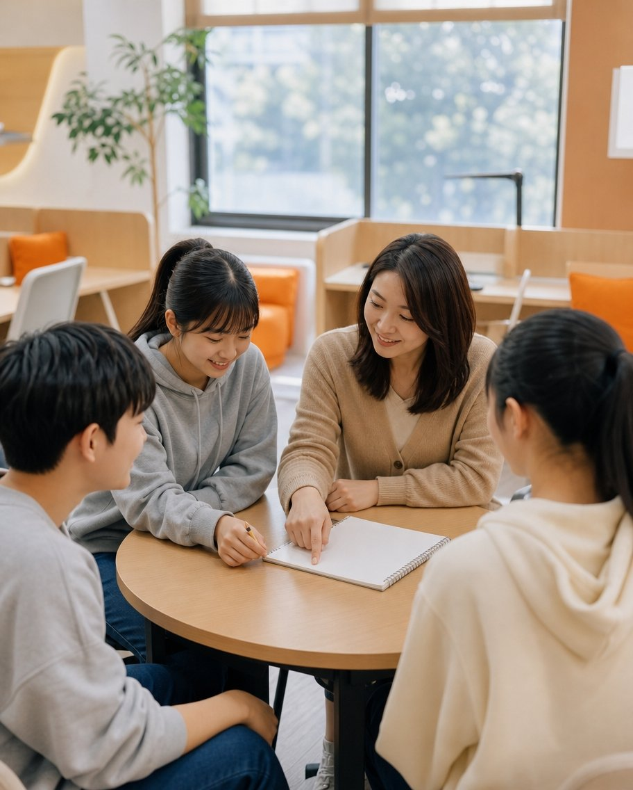
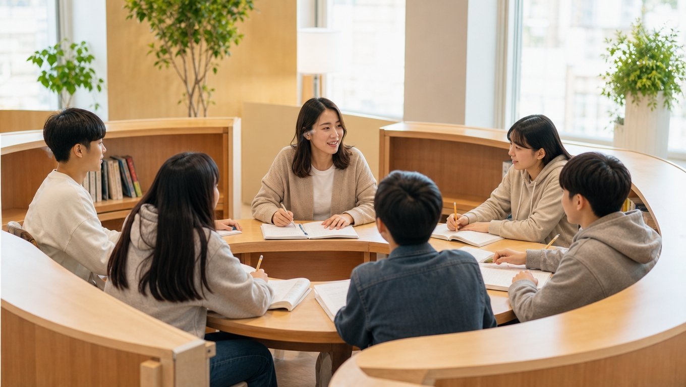

6등급 → 1등급
첫 시험 6등급에서 출발. 문법과 모의고사로 기본기를 다진 뒤 시험 2주 전부터 여러 학교 기출을 풀며 실전 감각을 키웠습니다. 성적이 오르자 목표 대학도 높아졌다고 합니다.
와와학습코칭센터 공개 사례를 요약한 내용입니다
와와학습코칭센터는 강의를 듣는 학원이 아니라 스스로 공부하는 법을 익히는 곳입니다. 코치를 가운데 둔 둥지학습, 매일 기록하는 플래너, 학년 대신 실력 기준의 무학년 수업으로 초등·중등·고등 학생의 국어·영어·수학과 공부 습관을 함께 관리합니다.

진도는 계속 나가는데 점수는 안 움직인다면 '무엇을 모르는지'를 모른 채 수업만 듣고 있을 가능성이 큽니다.
개념 없이 문제만 풀거나, 채점만 하고 오답을 다시 안 보거나, 단어를 눈으로만 외우는 습관이 원인일 수 있습니다.
시험일에서 거꾸로 계산해 4주 전부터 준비하는 방식을 배운 적이 없으면 매번 같은 패턴이 반복됩니다.
중2인데 분수가 흔들리면 중2 수업을 아무리 들어도 소용없습니다. 비어 있는 지점부터 다시 가야 합니다.
학년에 묶인 반에서는 앞서 나갈 수 없습니다. 실력 기준으로 다음 단계를 열어 줘야 합니다.
초등·중등 시기에는 과목보다 '매일 정해진 걸 하는 습관'이 먼저입니다. 플래너 루틴이 여기서 시작됩니다.

강사가 앞에서 설명하고 학생은 받아 적는 구조가 아닙니다. 코치 한 명을 중심으로 학생들이 둥글게 앉아 같은 눈높이에서 묻고 답합니다. 틀린 문제는 코치가 풀어 주는 대신 학생이 '왜 틀렸는지'를 말로 설명합니다.
이 과정에서 학생은 아는 것과 모르는 것을 스스로 구분하는 메타인지를 키웁니다. 참여도와 몰입도가 달라지고, 옆 친구의 태도가 자연스러운 자극이 됩니다.
매 수업 '오늘 할 일'을 행동 단위로 적고 실천 여부를 체크합니다. 언제 어떤 과목에 얼마나 시간을 썼는지, 미룬 과제가 무엇인지가 보이기 때문에 공부 습관 자체를 진단하고 고칠 수 있습니다.
시험기간에는 시험일에서 거꾸로 세어 과목별 분량을 배분합니다. 학부모도 '학원 다녀왔다'가 아니라 '무엇이 진행 중인지'를 확인할 수 있습니다.
같은 교실에서 학생마다 다른 교재, 다른 단원, 다른 속도로 공부합니다. 기초가 빈 학생은 빈 지점부터, 앞서가는 학생은 다음 단계로 갑니다. 진단검사 결과가 출발점을 정합니다.
'반 전체가 같은 진도'에서 버려지던 양 끝의 학생들이 가장 큰 효과를 보는 구조입니다. 대신 진단과 관리가 느슨하면 흐트러지기 때문에 4C 프로세스와 플래너가 받쳐 줍니다.
한 번 진단하고 끝이 아닙니다. 진단 → 처방 → 상담 → 지도를 반복하며 학생에 맞게 계속 조정합니다.
진단검사와 레벨테스트로 학생의 학습 성향, 과목별 결손 지점, 공부 습관을 먼저 봅니다. '어디가 비었는지'를 모르고 시작하는 수업은 없습니다.
진단 결과로 과목·시작 단원·주간 분량·플래너 운영 방식을 학생마다 다르게 정합니다. 학년표가 아니라 학생 기준입니다.
정기 상담으로 목표와 동기를 다시 맞추고, 학부모에게는 진행 상황과 다음 과제를 공유합니다. 멘탈이 흔들리는 시기도 함께 봅니다.
코치가 옆에서 막히는 부분을 풀어주고, 틀린 이유를 학생이 스스로 설명하게 합니다. 답을 알려주는 수업이 아니라 공부 방법을 바꾸는 수업입니다.
* 세부 운영은 센터와 학년에 따라 다릅니다. 상담 시 해당 센터 기준으로 안내합니다.
| 구분 | 일반 강의식 수업 | 와와 개별 맞춤 무학년 수업 |
|---|---|---|
| 기준 | 학년과 학교 진도 | 학생의 현재 실력과 결손 |
| 진행 | 반 전체가 같은 속도 | 학생마다 다른 단원, 다른 속도 |
| 반 편성 | 초5반·중1반처럼 학년별 | 학년 구분 없이 실력 기준 |
| 교사 역할 | 설명하는 강사 | 진단하고 설계하는 코치 |
| 평가 | 정기 테스트·숙제 검사 | 단원별 성취도, 오답 분석, 개인 피드백 |
| 잘 맞는 학생 | 같은 진도를 무리 없이 따라가는 학생 | 기초 보완이 필요하거나, 앞서 나가야 하거나, 자기 속도가 필요한 학생 |
| 주의할 점 | 수준 차가 큰 학생은 버려지기 쉬움 | 진단·관리가 느슨하면 흐트러짐 → 플래너·4C로 보완 |
와와학습코칭센터가 공개한 수강 사례를 요약했습니다. 효과는 학생의 출발점과 학습량에 따라 다릅니다.
첫 시험 6등급에서 출발. 문법과 모의고사로 기본기를 다진 뒤 시험 2주 전부터 여러 학교 기출을 풀며 실전 감각을 키웠습니다. 성적이 오르자 목표 대학도 높아졌다고 합니다.
막연하게만 느껴지던 수학을 이해하기 쉬운 설명과 수행평가 관리로 차근차근 올렸습니다. 두 번의 시험을 거치며 점수가 계단식으로 상승했습니다.
부족한 개념과 학습 습관을 정확히 진단받고 자기주도학습 중심 개별 코칭을 3년간 이어간 사례. 성적뿐 아니라 공부 태도와 자신감이 달라졌다고 전합니다.
수능최저 압박으로 극심한 불안을 겪던 시기에 코치의 멘탈 관리와 전략적 피드백으로 흐름을 되찾아 목표를 달성했습니다.
가장 큰 차이는 수업의 방향입니다. 일반 학원은 강사가 설명하고 학생이 듣는 구조라면, 와와학습코칭센터는 코치를 가운데 두고 학생들이 둘러앉는 둥지학습 구조에서 학생이 질문하고 설명하며 배웁니다. 여기에 플래너로 학습 습관과 공부 방법까지 관리하기 때문에 '센터에 있을 때만 공부하는 아이'가 아니라 '집에서도 스스로 공부하는 아이'를 목표로 합니다.
진단(Check) → 처방(Curriculum) → 상담(Consulting) → 지도(Coaching)의 4단계를 반복하는 와와의 운영 방식입니다. 처음에 진단검사로 성향과 결손을 파악하고, 그 결과로 과목·단원·분량을 정하고, 정기 상담으로 방향을 조정하면서, 코치가 밀착해서 지도합니다. 한 번 하고 끝나는 게 아니라 계속 돌아가는 순환 구조입니다.
코치 한 명을 중심으로 학생들이 둥글게 앉아 같은 눈높이에서 묻고 답하는 수업 형태입니다. 틀린 문제를 코치가 바로 설명해 주는 대신 '왜 틀렸는지'를 학생이 말로 설명하게 해서 아는 것과 모르는 것을 스스로 구분하게 합니다. 참여도와 집중도가 올라가고 메타인지가 자랍니다.
2025년 기준 전국 205개 센터가 운영 중입니다. 서울·인천·경기·대전·충청·강원·제주·경상·전라 권역에 있으며, 상담 신청 시 거주 지역과 학교를 적어 주시면 가까운 센터를 찾아 안내해 드립니다. 본사 홈페이지의 '전국 센터 찾기'에서 직접 검색하셔도 됩니다.
교습비는 센터·학년·과목 수에 따라 다르며, 각 센터의 교습비 게시표가 본사 '전국 센터 찾기' 상세 페이지에 공개되어 있습니다. 이 페이지에서는 임의의 금액을 안내하지 않고, 상담 시 해당 센터 기준으로 정확히 말씀드립니다.
초등학생 학습코칭 — 초등 시기의 목표는 점수보다 습관입니다. 플래너로 매일 정해진 분량을 하고 체크하는 루틴을 만들고, 초등 수학 연산과 개념, 초등 영어 파닉스·어휘·독해, 국어 문해력과 독서 습관을 수준에 맞게 진행합니다. AI독서(초1~중2)로 진로와 연결된 독서 포트폴리오도 만들 수 있습니다.
중학생 내신 학원 — 중학교 내신은 학교마다 출제 스타일이 다릅니다. 교과서·프린트·부교재를 반영한 중등 영어·수학 내신 대비, 서술형과 수행평가 관리, 시험 4주 전부터 시작하는 역산 계획으로 중간·기말고사를 준비합니다. 개념 없이 문제만 푸는 습관, 오답을 안 보는 습관을 플래너로 잡습니다.
고등학생 내신·수능 코칭 — 내신, 수능, 수행평가를 동시에 관리해야 하는 시기입니다. 학교별 기출 분석, 서술형 답안 훈련, 모의고사 오답 분석, 수능 D-100 전략과 멘탈 관리까지 코치가 밀착합니다. 기초가 흔들리면 무학년 수업으로 이전 과정부터, 상위권은 연계 심화로 1등급의 차이를 만듭니다.
자기주도학습 학원을 찾고 계신다면 — 학원을 다녀도 성적이 오르지 않는 학생, 공부 시간은 많지만 방법이 틀린 학생, 기초 결손을 보완해야 하는 학생, 앞서 나가야 하는 상위권 학생 모두 각자의 출발점에서 자기 속도로 학습합니다. 오답노트·백지노트·개념노트로 공부 방법을 교정합니다.
가까운 와와학습코칭센터 — 서울·인천·경기·대전·충청·강원·제주·경상·전라 권역에 205개 센터가 있습니다. 상담 신청 시 지역과 학교를 남겨 주시면 가까운 센터와 진단 일정을 안내합니다. 교습비와 시간표는 센터별로 다르며 상담 시 정확히 안내합니다.
AI학습클래스 — AI영어(초1~고3), AI수학(초1~고3), AI국어(중1~고3), AI독서(초1~중2) 프로그램이 레벨테스트 → 취약점 분석 → 맞춤 트레이닝으로 이어지고, 코치가 플래너로 실천을 관리합니다. 운영 과목은 센터별로 다릅니다.
학년·학교·현재 상황만 알려주세요. 가까운 센터 기준으로 진단 일정과 진행 방식을 솔직하게 안내해 드립니다. 상담은 무료이고, 등록을 권유하지 않습니다.